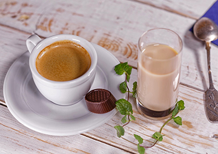

お知らせ
スタッフ募集のお知らせ
あなたもDummy Cafeで一緒に働きませんか？私達と一緒に働いてくれるアルバイトを募集します。詳しくは、スタッフの募集ページへ
2017.2.10

Dummy Cafeに 1度でもご来店頂いたお客様は、次回から「いつもの。」でご注文頂けます。 もちろんあなたのお好きな、コーヒーの苦さ、お砂糖やミルクの量もちゃんと把握しています。 あなたがDummy Cafeにいる間は、「いつもの。」というたったひとつの魔法の言葉で全てが通じる。 そんな架空のサービスを提供しています。


採れたてのブルーベリーをたくさん使ったブルーベリーのタルトです。 苦目のコーヒーとよく合います。
¥500
あなたもDummy Cafeで一緒に働きませんか？私達と一緒に働いてくれるアルバイトを募集します。詳しくは、スタッフの募集ページへ
2017.2.10
ついにDummy Cafeがオープンしました。みなさん是非コーヒーを飲みに来て下さいね。
2017.1.25
本日、Dummy CafeのWEBサイトを公開しました。
2017.1.21